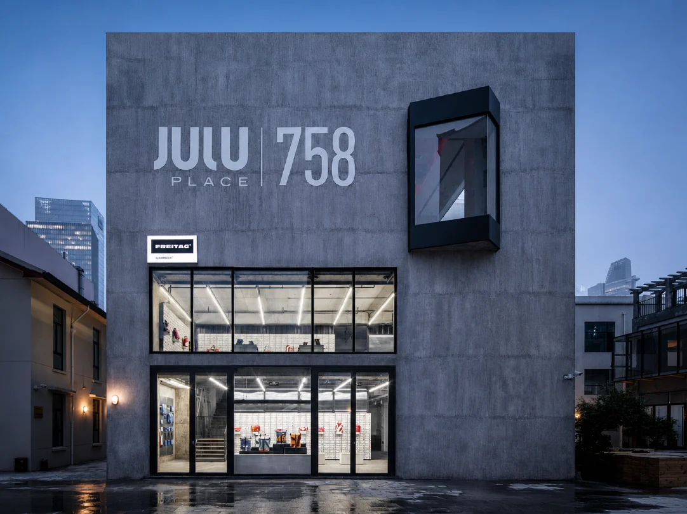
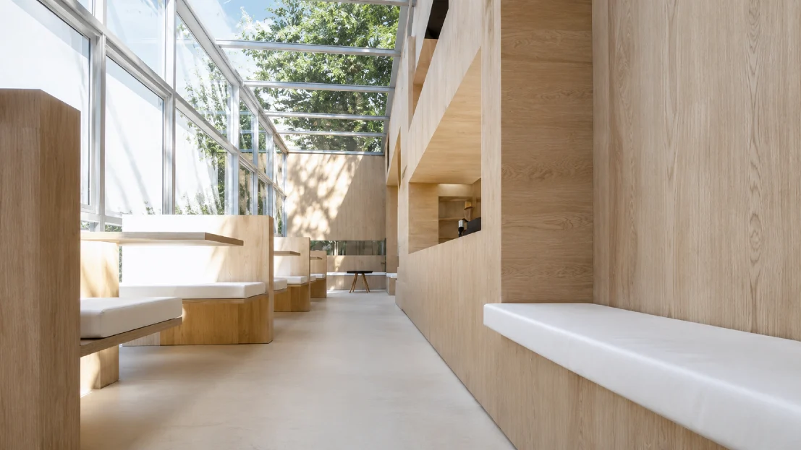
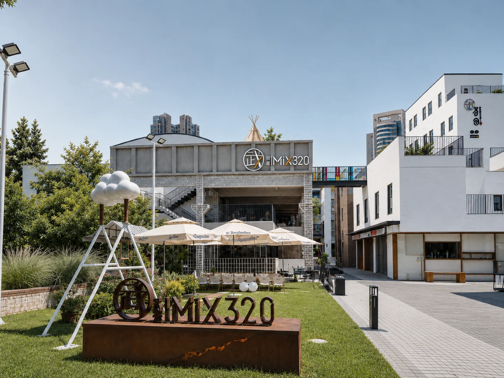

Spaces / Selected practiceArt, architecture & everyday life
Spaces, reawakened
城市更新

The story
Preservation is not static conservation, but contemporary activation.
The Parrot brings art, culture and design into historic buildings, commercial spaces and neighbourhoods. Respecting their original fabric and lived histories, its spatial practice seeks to reconnect architecture with the rhythms of contemporary city life.
- Artists & collaborators
- The Parrot
- From the archive
- The Parrot 2026 · pp. 49, 50


